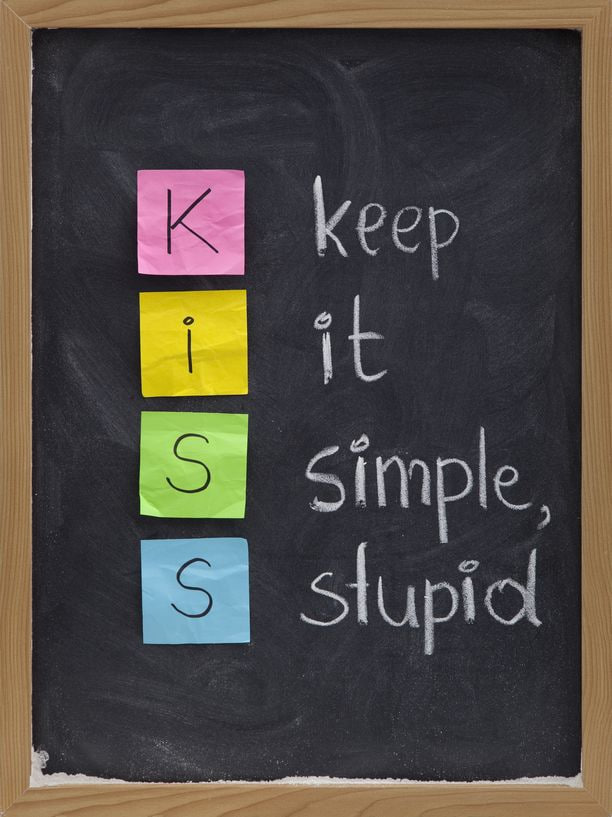
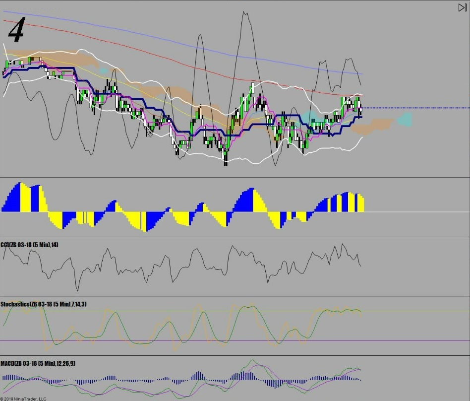
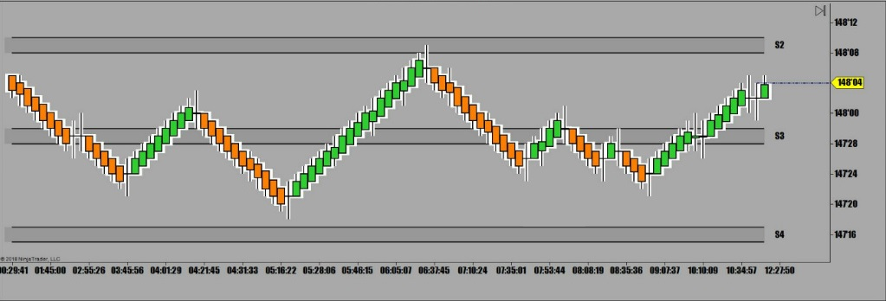
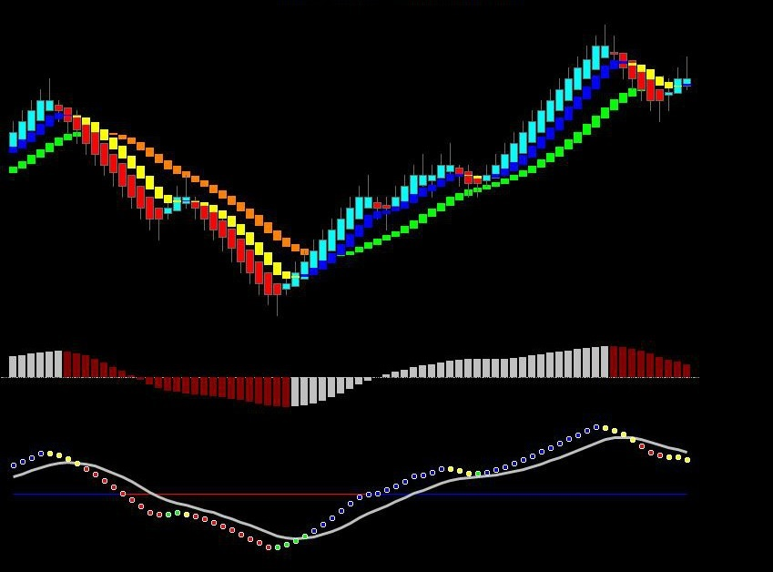

해외선물 - Keep it Simple, Stupid

트레이더의 매매시스템 차트를 보면
어떤 차트는 서울시 하수도 시스템처럼 정신없이 난해한 차트가 있는가 하면
어떤 시스템은 아무것도 없이 휑하니 찬바람 부는 올림픽 끝난 평창같은 차트도 있음
왕초보들일수록 소심한 사람일수록 차트에 온갖 보조지표와 이평선으로 도배를 쳐놨음

물론 사람에 따라 Multitasking이 잘되는 능력자도 있겠지만
과도한 정보는 오히려 좋은 매매 타이밍을 망치기 일쑤임
이쪽에선 지금 매수신호인데 저쪽은 매도신호를 내고 있고
이평선 통과해서 들어가려니 코앞에 일목균형 기준선이 버티고 있고
그걸 지나니 오늘의 피봇이 나오고 그걸 지나면 어제 저점이고그 다음에는 다른 이평선이 또 있고
CCI Indicator를 보니 Divergence가 보이고 스톡은 상승중인데 MACD는 하락중이고.
들어갈 자리가 하나도 없음
이래 망설이고 저래 고민하다가 결국 매매를 못하고 마감하게 됨
반면에 고수들의 매매차트는 급식충들도 10분만 설명들으면 누구나 매매할 수 있을 정도로 간단함
매매 신호차트 #1

추세 방향따라 색깔 바뀔 때 들어가서 색깔 바뀌면 나옴.
Keep it simple,stupid 간단하고 바보같은 - 매매차트.
미국의 세계적인 증권사인 G사에서 20년 이상 선물매매팀장으로 일하면서 나름의 지식과 경험을 바탕으로
수 없는 시행착오와 교정을 거치면서 나름대로 완성한 나만의 매매시스템 차트임
매매신호 차트#2

별 설명이 필요없는 차트
*프로 트레이더들일수록 인간의 Emotion을 배제한 기계적인 매매를 하고 있음
기계적인 매매를 하려면 진입조건이 간단해야하고 매매씨그날이 알기 쉬워야 함
기계적인 매매를 못하면 매매할 때마다 눈치보고 고민하고 두려움에 부들부들 떨면서 심장병 걸리고.
매순간 눈치작전으로 대응을 하다보면 피곤해서 얼마 버틸 수가 없음
그래서 매매가 스트레스가 되고 아침이 오면 벌써 매매가 두려워 주말만 기다리게 되는거임
기계적인 매매는 아무것도 생각할 필요도 없고 고민할것도 없음
아침 뉴스 한 번 휙 훑어보고 일봉차트 한번보고 큰 차트로 지지/저항/추세선 표시해 놓고
커피 한잔 마시고 매매시작해서 신호 나오면 사면되고 신호나오면 팔면되고..
70% 이상 성공하는 매매기법만 가지면 결국에는 누적수익률은 계속 올라가게 된다능....
그래서 기계적인 매매를 해야하고 그러기 위해서는
매매신호가 가장 심플하고 깔끔하게 나오게끔 나만의 필살차트를 만들어야 함
Monkey see Monkey do !!!